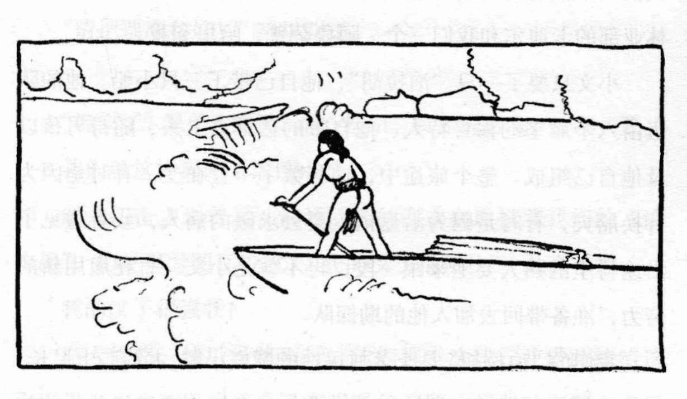
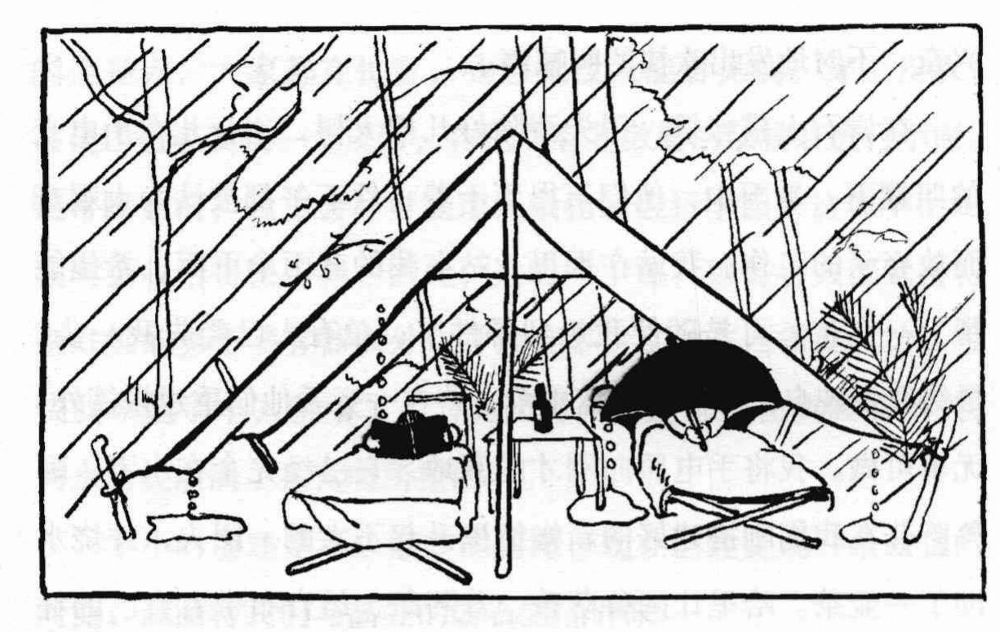
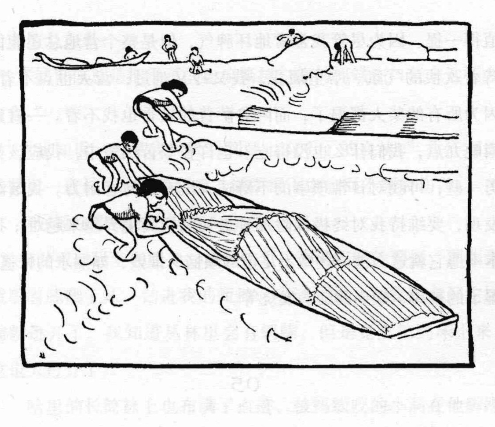
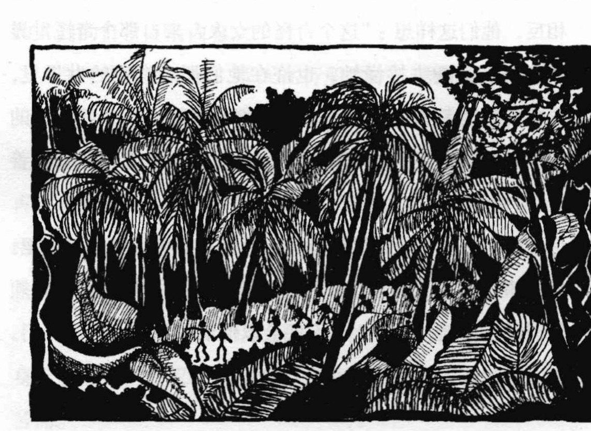
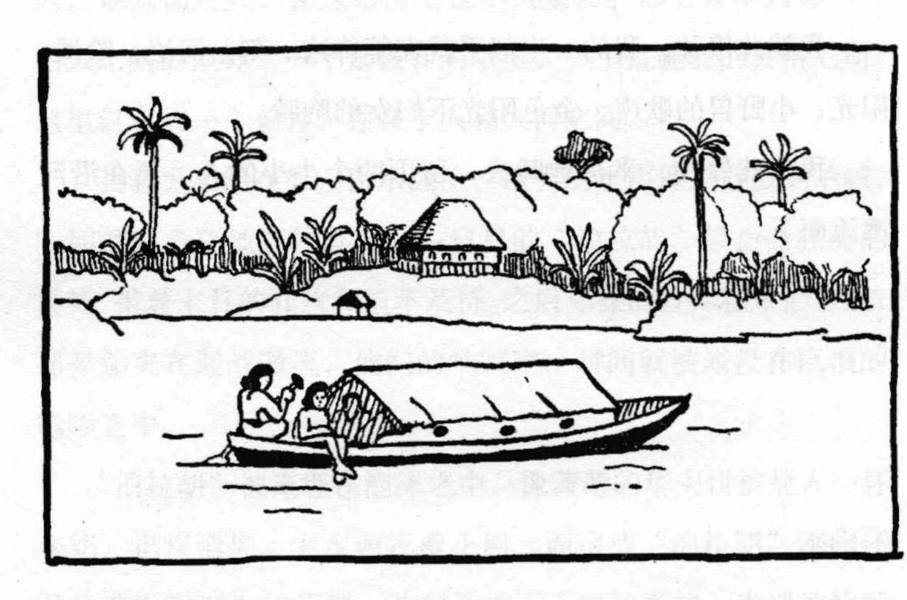

Land Below the Wind
风下之乡
1938 年，作家阿格尼丝·凯斯随从事林务工作的丈夫哈里·凯斯，进入英属北婆罗洲东南部的河流与雨林。
他们从山打根（Sandakan）出发，沿海岸南下至斗湖（Tawau），由卡拉巴坎（Kalabakan）换独木舟逆流而上；翻越分水岭后，再顺夸穆特河（Kuamut River）与京那巴当岸河（Kinabatangan River）回到海上。
向下滚动，路线会随章节向前延伸
Land Below the Wind
1938 年，作家阿格尼丝·凯斯随从事林务工作的丈夫哈里·凯斯，进入英属北婆罗洲东南部的河流与雨林。
他们从山打根（Sandakan）出发，沿海岸南下至斗湖（Tawau），由卡拉巴坎（Kalabakan）换独木舟逆流而上；翻越分水岭后，再顺夸穆特河（Kuamut River）与京那巴当岸河（Kinabatangan River）回到海上。
向下滚动，路线会随章节向前延伸
山打根（Sandakan）
1938 年 6 月初
山打根山坡上的 Newlands 是凯斯夫妇生活、写作和林务工作的基地。远征计划曾三次搁置，其中两次是暴雨令河道无法通航；真正出发时，Agnes 仍在发烧，却知道这次再回到花园小径时，身体与记忆都将不同。
今天的阿格尼丝·凯斯故居（Agnes Keith House）是 1946—47 年战后重建的房屋。它能够提供可靠的空间锚点，但不是 1938 年原屋的完整遗存。
“下一次再走上这条花园小径时……心里装满了我想要回味留恋的各种记忆。”
2016 中译本 · 短引
来源：Sabah Museum · 1939 初版背景
地点锚点｜纽兰兹（Newlands）现址可确认；今天的建筑为战后重建。
斗湖（Tawau）—塞巴蒂克岛（Sebatik Island）
远征第一程
他们在斗湖（Tawau）与石油公司地质学家 Winki 会合，随后乘一艘挂着黑黄船帆的 bagong 驶往塞巴蒂克岛（Sebatik Island）。城里穿的鞋袜被塞进船底，赤脚反而更适合这段水路。
Winki 要继续钻探试油孔，Harry 则收集树木标本。营地里，他们用立体镜看航拍照片：原本像鱼子酱和小虫的纹理忽然变成树冠、深林与河道。借来的轻帐篷和第一杯浓咖啡，也把日常生活推向了野外。
“我们把鞋袜脱掉，摊在船板上，舒服地光着脚。”
2016 中译本 · 短引
原书剧情线索
空间精度｜塞巴蒂克岛营地（Sebatik Island camp）的精确位置尚未找到，暂以华莱士湾（Wallace Bay）为范围锚点。
卡拉巴坎（Kalabakan）
1938.06.03
到了 Kalabakang，旅行工具彻底改变：队伍改乘当地制造的 perahu。船身约二十英尺长、底部浑圆，只容一人纵向坐下；行李必须精确码放以维持平衡，人的舒适从一开始就不在考虑范围内。
标本标签把 6 月 3 日钉在这里。旧拼法 Kalabakang 与现代卡拉巴坎（Kalabakan）指向同一河口，也标志着海岸航行转入内陆河网。
“大多数时候，我们蹲在船舱底部，蜷缩在行李中间……屁股一直泡在永远湿漉漉的船舱里。”
2016 中译本 · 短引

原书剧情线索 · 标本日期链
蒂高河（Tiagau River）
1938.06.06—06.09
雨几乎每天午后准时到来，帐篷还没从前一夜干透，下一场雨已经开始。Agnes 把等待搭营的自己比成一尊被小心搬进搬出的瓷观音；真正能让身体重新运转的，只是干衣服、热咖啡和一双干袜子。
急流处，船夫有时从岸边拖船，乘客则爬过湿滑的岩石；Unggib 甚至叼着点燃的烟斗游在船旁。到了上蒂高（Hulu Tiagau），水路才逐渐让位给徒步。
“三点扎营，从中午开始瓢泼大雨。太累了，不写了。”
2016 中译本 · 短引

原书剧情线索
地名对应｜old Tiaggau 即蒂高河（Tiagau River）；河口可定位，彭加兰（Pengkalan）沿河段为复原。
洪水来临
蒂高河上游（Upper Tiagau）
Puasa 反复警告洪水风险。船队一面前行，一面把对洪水的担忧唱进节奏里。气候并非旅程的背景；它是随时能够改写路线和时间的力量。
水真正涨起来时，人们把帐篷、帐杆和那把醒目的蓝伞托在水面上。重新上路后，他们又接连闯过六道长急流；船夫在旋涡里推、拉、游、撑，每过一道，队伍都要靠岸把进水的船清空。
“船一直在进水，每过一次急流，我们都得把它推到岸边去清空一次。”
2016 中译本 · 短引

原书剧情线索
上比尤敦河（Hulu Biyudun River）
1938.06.11—06.12
在比尤敦（Biyudun）河谷，水蛭并不遵守“只到膝盖以下”的经验。不断检查皮肤、处理伤口、设法保住衣物，成了与找路同样实际的工作。
他们有时让行李走水路，自己穿过丛林。Agnes 越来越疲惫，跌进泥里时甚至感到生理性的厌恶；夜里听雨，她又从 Harry 的强壮与自己的柔弱中重新理解了这段共同承担的旅程。
“不过无论如何，我走过来了……这些，兴许比橡胶束身衣要珍贵呢……”
2016 中译本 · 短引

原书剧情线索 · 标本日期链
空间精度｜标本地名与日期可以核对，现代河道和具体坐标仍属复原。
中纳帕贡（Middle Napagun）—纳帕贡河口（Kuala Napagun）
1938.06.14—06.16
水蛭伤口持续流血，衣服又无法在雨里晾干。Agnes 把这段旅程写成意志与身体之间的拉扯：精神仍想前进，身体却一次次滑倒在湿岩和泥地里。
标本标签留下了中纳帕贡（Middle Napagun）与纳帕贡河口（Kuala Napagun）的日期，却没有留下足以精确落点的现代坐标。因此，路线继续向前，地图上仍保留着虚线和菱形的疑问。
“traveling with the will of nature, rather than against it.” “与自然的意志同行，而非逆势而行。” Agnes Newton Keith · 1939
原书剧情线索 · 标本日期链
证据边界｜中纳帕贡与河口的日期可核对，坐标依河网关系复原。
夸穆特河（Kuamut River）
1938 年 6 月 18 日以后
急流把细长的 perahu 埋进白沫里，船不再只是交通工具，而像在水里挣扎的东西。到 Kuala Kuamut，治安官用仪式迎接他们，并把平日断案的公署让作住处；这里终于再次像一个码头和村落。
离开时，Agnes 刚换上最后一套干净衣服，便从松动的独木板上掉进齐膝的泥里。这个狼狈的瞬间之后，复原路线却重新获得明确汇流点：他们将进入更宽阔的 Kinabatangan。
“经历了夸马特河的壮美，京那巴当岸河的下游便显得闷热、缓慢而泥泞。”
2016 中译本 · 短引
原书剧情线索
京那巴当岸河（Kinabatangan River）—苏禄海（Sulu Sea）
1938 年 6 月下旬
洪水扰乱了接驳：宾达山（Bintasan）的预定汽船三天前已经来过，又因无法确定等待多久而离开。雨夜里，他们只得向当地人借宿；第二天在拉马（Lamag）一带，泥岸上的鳄鱼又把注意力拉回眼前的河流。
他们终于见到小文的摩托艇，后面一字拖着九只 perahu，像水牛尾巴。船夫们高举船桨欢呼，水从衣服和笑脸上流下；再顺 Kinabatangan 驶入 Sulu Sea，海才真正把他们送回 Sandakan。
“I had forgotten the peace and rest of the sea.” “我已经忘了海洋的宁静与安歇。” Agnes Newton Keith · 1939

原书剧情线索
路线之外的书中世界
凯斯夫妇的横穿只是这片土地上众多故事中的一条线。阿拜连接 1935 年的电影探险，仙本那与拿笃连接东岸人物和航路；利尼迪斯则把 1938 年旅程拉回 1890 年一场被殖民报复放大的惨剧。
“这故事太可怕了。”我说。哈里答：“可正是因为这样的故事，你和我今天才敢在河上旅行。”
2016 中译本 · 短引
1935 年约翰逊夫妇拍摄野生动物的营地——属于另一场探险。
书中人物与海岸故事汇聚的东岸城镇。
原书地图与海岸叙事中的东岸坐标。
书中转述的 1890 年 Walter Flint 事件，是一段历史回声。
黄点表示书中相关地点，绿点表示历史事件；二者均不计入 1938 年主路线。
地图附记
这条线表达目前证据支持的行程顺序，并非 GPS 轨迹。地点索引只保留阅读路线所需的信息；虚线与菱形继续标明尚待校准的部分。
01—13
卫星影像：Esri, Vantor, Earthstar Geographics, and the GIS User Community · 地图渲染：MapLibre GL JS